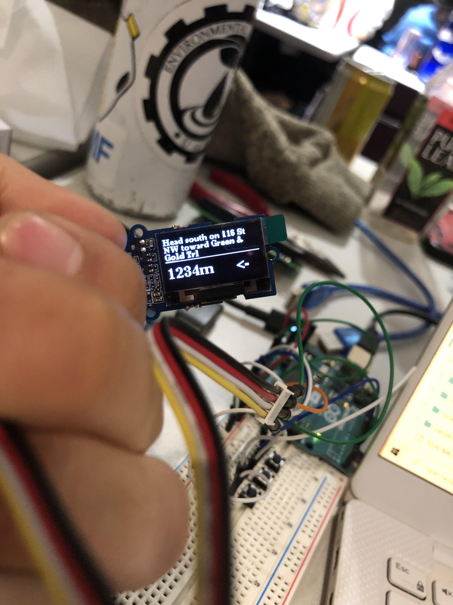

<< Home
FRoute
August 29, 2024
Tags: Software
Froute was designed for the HackEd 2024 Hackathon. It consists of a vaguely fruit shaped object that at the press of a button will guide you to a random restaurant within walking distance, eliminating indecision, whilst allowing you to explore your own neighbourhood or a new area.
Devpost available here: Froute
Inspiration
The inspiration for this project came from a desire to solve the time tested problem of being presented with a plethora of places to go eat, but being paralysed by indecision. We figured the best solution would be to take the humans out of the equation and for a device that could find a random place to go eat.
Why not an App?
We discovered that when presented with a wide selection on google maps it became difficult to figure out what the best place to eat was. By the time everyone's happy with the selection a good half hour is almost always wasted. Meanwhile Froute actively discourages time wastage on the modern day attention trap that is the smart phone. 
How's it work?
In the hackathon implementation the board that we were using did not have wifi capabilities, as such we tried to get it to work in a roundabout way, connecting to your computer via bluetooth and then using the computer's wifi to get the location data, afterwards it would access the google maps API, which would load up walking instructions that could be scrolled through on the screen, to get to a destination.
Current/Future work
I've begun to work on an ESP 32 compatible program for FRoute which would allow for a more seamless connection to the internet. This would allow for easy connection at home, as well as with the added benefit of needing less chips and reducing power consumption. Adding more flash memory via a micro SD card would also be advisable due to the memory contraints of many small microcontroller boards.